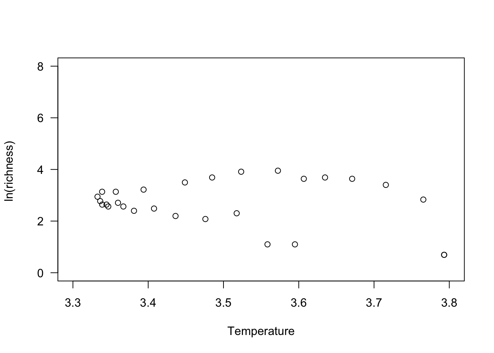
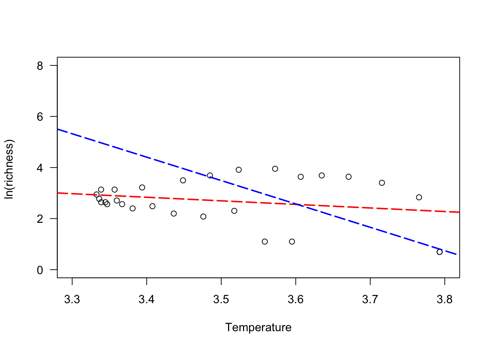

| title: “Kinetic Energy Hypothesis in Migratory Fishes” |
| knit: (function(input_file, encoding) { |
| out_dir <- ‘docs’; |
| rmarkdown::render(input_file, |
| encoding=encoding, |
| output_file=file.path(dirname(input_file), out_dir, ‘index.html’))}) |
| author: “cite as: Alò, D., Lacy, S.N., Castillo, A.G., Samaniego, H.A. & Marquet, P.A. The macroecology of fish migration. Global Ecology and Biogeography.” |
| output: |
| html_document: default |
Equation #2 in Allen et al (2002) yields the following predictions for the relation of species diversity and temperature:
log-transformed number of species varies linearly with the inverse of the absolute temperature (1000/Tenv) in ectotherms
the slope should approximate -E/1000k = -9.0K along latitudinal gradient of both terrestrial and aquatic species as they share a similar activation energy for metabolism.
To test whether migratory and non-migratory fish species follow this predicted trend, we used the log-transformed number of species in 5-degree latitudinal bands (36 in total) for each migration and resident strategy and plotted them against 1000/k.
So, let’s look at the relationship between species richness and temperature in migratory fishes. To do this, store in your working directory the file KineticEnergyData.csv available from https://doi.org/10.5061/dryad.6hdr7sqz8
To find this directory, use the command getwd(). If you need to change the working directory you can use the command setwd(). It will be necessary to give the path to a file if you don’t save it within the working directory.
mydata <- read.csv("KineticEnergyData.csv")In particular, let’s look at the species richness and temperature relationship in anadromous species (+1 is used to avoid infinity):
y1<-log(mydata$ANA+1)
x1 <- (1000/(mydata$Temp.average + 273.15)) #to account for absolute temperature
plot(x1, y1,
ylim = c(0,8),
xlim = c(3.3,3.8),
ylab = "ln(richness) ",
xlab = "Temperature",
las=1,
col = "Black",
pch = 21,
cex.axis = 1,
cex = 1)
and now let’s add a red line with the corresponding linear model for anadromous species and a blue line from Allen et al (2002)
plot(x1, y1,
ylim = c(0,8),
xlim = c(3.3,3.8),
ylab = "ln(richness) ",
xlab = "Temperature",
las=1,
col = "Black",
pch = 21,
cex.axis = 1,
cex = 1)
mylm <- lm(y1~x1) #fit the linear model
#and now let's add the linear model fits to the graph, as reported in the paper:
#the red one is the anadromy linear model
abline(mylm, col = "red", lty=5, lwd = 2)
#and the blue is the linear model reported by Allen et al (2002)
abline(coef = c(35.55, -9.16), col = "blue", lty = 5, lwd = 2)
Let’s now look at another piece of information that was reported in our plot, the equation of the line and the r-squared value resulting for anadromous species:
mylm <-lm(y1~x1)
mylm##
## Call:
## lm(formula = y1 ~ x1)
##
## Coefficients:
## (Intercept) x1
## 7.592 -1.399# extracts the coefficients of the linear model
lm_coef <- round(coef(mylm), 4)
lm_coef## (Intercept) x1
## 7.5916 -1.3989#prepares the equation of the line
eq = paste("y =",lm_coef[["(Intercept)"]], lm_coef[["x1"]],"x")
eq## [1] "y = 7.5916 -1.3989 x"#gets the R-squared value out of the summary of the model
summary(mylm)$r.squared## [1] 0.05323342#and finally let's pull out the 95% confidence interval for the estimated liner model in respect to anadromous species and this can be computed using the generic function 'confint':
confint(mylm, level=0.95)## 2.5 % 97.5 %
## (Intercept) -0.7310065 15.9141610
## x1 -3.7771245 0.9793251Allen, A.P., Brown, J.H. & Gillooly, J.F. (2002) Global Biodiversity , Biochemical Kinetics , and the Energetic-Equivalence Rule. Science, 297, 1545–1548.